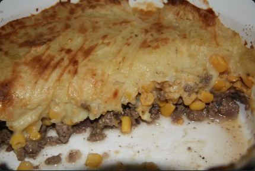

Pâté Chinois

Description
Pâté chinois, meaning "Chinese pie" in French, is a classic French-Canadian comfort dish that layers seasoned ground beef, canned or creamed corn, and mashed potatoes.
Despite its name, it has no ties to Chinese cuisine but reflects Canada's culinary fusion. Originating in Quebec in the late 19th or early 20th century, it likely evolved from British shepherd's pie brought by immigrants.
Today, pâté chinois is a beloved staple in Quebecois cuisine, cherished for its simplicity, heartiness, and comforting flavors, often enjoyed during family gatherings and potlucks, highlighting Canada's rich culinary heritage.
Ingredients
- 1 tablespoon canola oil
- 1 onion,diced
- 1 pound lean ground beef
- salt and ground black pepper
- 2 (15 ounce) cans cream-style corn
- 4 cups mashed potatoes
Steps
- Preheat oven to 375 degrees F (190 degrees C). Grease a 2-quart casserole with butter.
- Heat canola oil in a skillet over medium heat; cook and stir onion until translucent, about 5 minutes. Stir ground beef into onion, season with salt and black pepper, and cook ground beef mixture until browned and crumbly, about 10 more minutes. Drain excess grease.
- Spread cooked ground beef mixture into bottom of the prepared casserole dish; pour cream-style corn over the ground beef in a layer; top with layer of mashed potatoes.
- Bake in the preheated oven until potatoes are browned and casserole is bubbling, about 30 minutes.